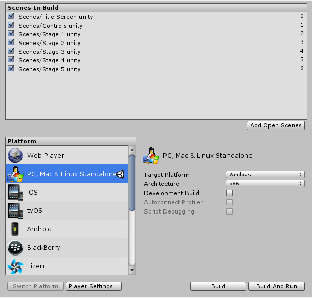

Platform dependent compilation
Unity includes a feature called Platform Dependent Compilation. This consists of some preprocessor directives that let you partition your scripts to compile and execute a section of code exclusively for one of the supported platforms.
You can run this code within the Unity Editor, so you can compile the code specifically for your target platform and test it in the Editor!
Platform #define directives
The platform #define directives that Unity supports for your scripts are as follows:
| Property: | Function: |
|---|---|
| UNITY_EDITOR | #define directive for calling Unity Editor scripts from your game code. |
| UNITY_EDITOR_WIN | #define directive for Editor code on Windows. |
| UNITY_EDITOR_OSX | #define directive for Editor code on Mac OS X. |
| UNITY_STANDALONE_OSX | #define directive for compiling/executing code specifically for Mac OS X (including Universal, PPC and Intel architectures). |
| UNITY_STANDALONE_WIN | #define directive for compiling/executing code specifically for Windows standalone applications. |
| UNITY_STANDALONE_LINUX | #define directive for compiling/executing code specifically for Linux standalone applications. |
| UNITY_STANDALONE | #define directive for compiling/executing code for any standalone platform (Mac OS X, Windows or Linux). |
| UNITY_WII | #define directive for compiling/executing code for the Wii console. |
| UNITY_IOS | #define directive for compiling/executing code for the iOS platform. |
| UNITY_IPHONE | Deprecated. Use UNITY_IOS instead. |
| UNITY_ANDROID | #define directive for the Android platform. |
| UNITY_PS4 | #define directive for running PlayStation 4 code. |
| UNITY_XBOXONE | #define directive for executing Xbox One code. |
| UNITY_TIZEN | #define directive for the Tizen platform. |
| UNITY_TVOS | #define directive for the Apple TV platform. |
| UNITY_WSA | #define directive for Universal Windows Platform. Additionally, NETFX_CORE is defined when compiling C# files against .NET Core and using .NET scripting backend. |
| UNITY_WSA_10_0 | #define directive for Universal Windows Platform. Additionally WINDOWS_UWP is defined when compiling C# files against .NET Core. |
| UNITY_WINRT | Same as UNITY_WSA. |
| UNITY_WINRT_10_0 | Equivalent to UNITY_WSA_10_0 |
| UNITY_WEBGL | #define directive for WebGL. |
| UNITY_FACEBOOK | #define directive for the Facebook platform (WebGL or Windows standalone). |
| UNITY_ADS | #define directive for calling Unity Ads methods from your game code. Version 5.2 and above. |
| UNITY_ANALYTICS | #define directive for calling Unity Analytics methods from your game code. Version 5.2 and above. |
| UNITY_ASSERTIONS | #define directive for assertions control process. |
From Unity 2.6.0 onwards, you can compile code selectively. The options available depend on the version of the Editor that you are working on. Given a version number X.Y.Z (for example, 2.6.0), Unity exposes three global #define directives in the following formats: UNITY_X, UNITY_X_Y and UNITY_X_Y_Z.
Here is an example of #define directives exposed in Unity 5.0.1:
| UNITY_5 | #define directive for the release version of Unity 5, exposed in every 5.X.Y release. |
| UNITY_5_0 | #define directive for the major version of Unity 5.0, exposed in every 5.0.Z release. |
| UNITY_5_0_1 | #define directive for the minor version of Unity 5.0.1. |
Starting from Unity 5.3.4, you can compile code selectively based on the earliest version of Unity required to compile or execute a given portion of code. Given the same version format as above (X.Y.Z), Unity exposes one global #define in the format UNITY_X_Y_OR_NEWER, that can be used for this purpose.
The supported #define directives are:
| CSHARP_7_3_OR_NEWER | Defined when building scripts with support for C# 7.3 or newer. |
| ENABLE_MONO | Scripting backend #define for Mono. |
| ENABLE_IL2CPP | Scripting backend #define for IL2CPP. |
| NET_2_0 | Defined when building scripts against .NET 2.0 API compatibility level on Mono and IL2CPP. |
| NET_2_0_SUBSET | Defined when building scripts against .NET 2.0 Subset API compatibility level on Mono and IL2CPP. |
| NET_LEGACY | Defined when building scripts against .NET 2.0 or .NET 2.0 Subset API compatibility level on Mono and IL2CPP. |
| NET_4_6 | Defined when building scripts against .NET 4.x API compatibility level on Mono and IL2CPP. |
| NET_STANDARD_2_0 | Defined when building scripts against .NET Standard 2.0 API compatibility level on Mono and IL2CPP. |
| ENABLE_WINMD_SUPPORT | Defined when Windows Runtime support is enabled on IL2CPP. See Windows Runtime Support for more details. |
You use the DEVELOPMENT_BUILD #define to identify whether your script is running in a player which was built with the "Development Build" option enabled.
You can also compile code selectively depending on the scripting back-end.
Testing precompiled code
Below is an example of how to use the precompiled code. It prints a message that depends on the platform you have selected for your target build.
First of all, select the platform you want to test your code against by going to File > Build Settings. This displays the Build Settings window; select your target platform from here.

Select the platform you want to test your precompiled code against and click Switch Platform to tell Unity which platform you are targeting.
Create a script and copy/paste the following code:
// JS
function Awake() {
#if UNITY_EDITOR
Debug.Log("Unity Editor");
#endif
#if UNITY_IPHONE
Debug.Log("Iphone");
#endif
#if UNITY_STANDALONE_OSX
Debug.Log("Stand Alone OSX");
#endif
#if UNITY_STANDALONE_WIN
Debug.Log("Stand Alone Windows");
#endif
}
// C#
using UnityEngine;
using System.Collections;
public class PlatformDefines : MonoBehaviour {
void Start () {
#if UNITY_EDITOR
Debug.Log("Unity Editor");
#endif
#if UNITY_IOS
Debug.Log("Iphone");
#endif
#if UNITY_STANDALONE_OSX
Debug.Log("Stand Alone OSX");
#endif
#if UNITY_STANDALONE_WIN
Debug.Log("Stand Alone Windows");
#endif
}
}
To test the code, click Play Mode. Confirm that the code works by checking for the relevant message in the Unity console, depending on which platform you selected - for example, if you choose iOS, the message "Iphone" is set to appear in the console.
In C# you can use a CONDITIONAL attribute which is a more clean, less error-prone way of stripping out functions. See ConditionalAttribute Class for more information.
Note that common Unity callbacks (ex. Start(), Update(), LateUpdate(), FixedUpdate(), Awake()) are not affected by this attribute because they are called directly from the engine and, for performance reasons, it does not take them into account.
In addition to the basic #if compiler directive, you can also use a multiway test in C#:
#if UNITY_EDITOR
Debug.Log("Unity Editor");
#elif UNITY_IOS
Debug.Log("Unity iPhone");
#else
Debug.Log("Any other platform");
#endif
Platform custom #defines
It is also possible to add to the built-in selection of #define directives by supplying your own. Open the Other Settings panel of the Player settings and navigate to the Scripting Define Symbols text box.

Enter the names of the symbols you want to define for that particular platform, separated by semicolons. These symbols can then be used as the conditions for #if directives, just like the built-in ones.
Global custom #defines
You can define your own preprocessor directives to control which code gets included when compiling. To do this you must add a text file with the extra directives to the Assets folder. The name of the file depends on the language you are using. The extension is .rsp:
| C# (player and editor scripts) | <Project Path>/Assets/mcs.rsp |
As an example, if you include the single line -define:UNITY_DEBUG in your mcs.rsp file, the #define directive UNITY_DEBUG exists as a global #define for C# scripts, except for Editor scripts.
Every time you make changes to .rsp files, you need to recompile in order for them to be effective. You can do this by updating or reimporting a single script (.js or .cs) file.
NOTE
If you want to modify only global #define directives, use Scripting Define Symbols in Player settings, as this covers all the compilers. If you choose the .rsp files instead, you need to provide one file for every compiler Unity uses, and you don't know when one or another compiler is used.
The use of .rsp files is described in the 'Help' section of the mcs application which is included in the Editor installation folder. You can get more information by running mcs -help.
Note that the .rsp file needs to match the compiler being invoked. For example:
- when targeting any players or the editor, mcs is used with
mcs.rsp, and - when targeting MS compiler, csc is used with
csc.rsp, etc.